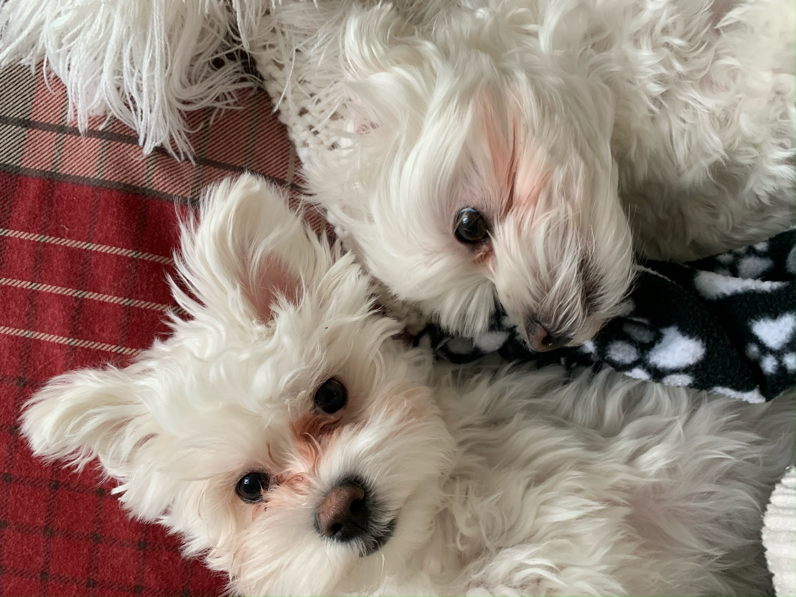

Sara just left for Indianapolis and the house hasn’t felt the same since. Just a couple days ago we went down to Arch Cape, Oregon and did the Cape Falcon Trail. We both wore our Chacos and were grateful as our feet were caked in mud by the end of it and we would have ruined any other shoe...

